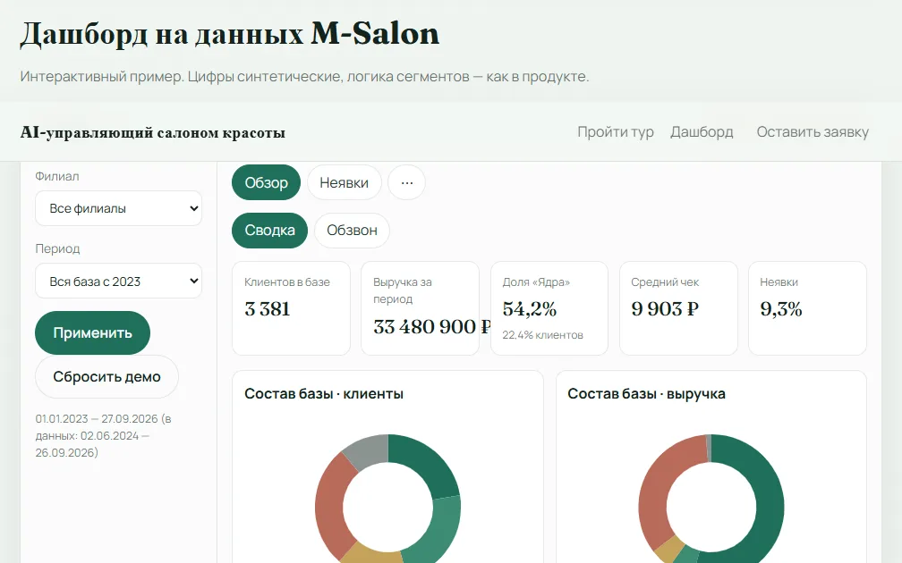

Кейс · 01
AI-управляющий салоном красоты
Для салонов с записью в YClients: видит, кто держит выручку, кто тихо уходит, и кому администратор должен позвонить завтра — без Excel и без выгрузки базы наружу.
- Инструмент
- живой дашборд
- Демо
- синтетика M-Salon
- Группы
- 5 сегментов

Что сделал
Собрал управленческий слой поверх YClients: клиенты сами складываются в группы «ядро / новички / растут / уходят / спящие», у каждой — одно понятное действие. Собственник смотрит сводку, управляющий забирает списки на обзвон, администратор звонит по короткому списку. База салона читается локально; наружу — только публичное демо на синтетике.
Что на выходе
- Живой дашборд с сегментами и действиями на неделю
- Списки обзвона, отчёт по неявкам, выгрузка в Excel
- Установка у салона — без публикации базы в интернет
- Только чтение YClients; ярлыки групп — по желанию
Онлайн-демо работает на вымышленных цифрах. Реальные телефоны клиентов и название салона-заказчика не публикую.
Непонятно, кому звонить на этой неделе? Опишите задачу →